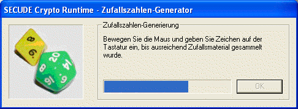

Dieser Zufallsgenerator benutzt die Funktion rndm aus dem
Secude-SDK, um Zufallsdaten zu erzeugen. Die Funktion wird mehrfach aufgerufen
und zwar für jedes zu erzeugende Bit einmal.
Bemerkung:
Der Secude-Pseudozufallsgenerator wird eingesetzt sowohl bei der Erzeugung neuer
Schlüsselpaare, der Erzeugung von Sessionkeys oder wenn Sie explizit sagen,
dass Sie mit dem Secude-Pseudozufallsgenerator Zufallsdaten erzeugen wollen.
Beim ersten Aufruf des Secude-Pseudozufallsgenerators wird die Entropie für den
Seed-Wert (ein zufälliger Startwert) "gesammelt": Das Sammeln geschieht mit
Hilfe Ihrer Tastatureingaben und Mausbewegungen. D.h. Sie sehen die Maske des
Entropie-Sammlers

nur einmal pro Aufruf von CrypTool.